Fisher geodesics and learned coupling fields in \(CP^{N-1}\)
The 43rd International Symposium on Lattice Field Theory
July 24, 2026
Standard critical slowing down:
\[\tau_{\mathrm{int}}(\mathcal{O}) \;\sim\; a^{-z}\]
Topological freezing: [1] [2]
\[\tau_{\mathrm{int}}(Q^2) \;\sim\; e^{\,c/a}\]
Why sampling Topology is so difficult?
Particle on a ring
\(x(\tau): S^1_\tau \rightarrow S^1_x\)
The path integral splits into homotopy sectors by winding number \(Q\in\mathbb{Z}\):
\[Z \;=\; \sum_{Q} Z_Q\]
Constant acceptance ⇒ \(\delta x \sim \sqrt{a}\).
Topology changes require crossing an action barrier \(\Delta S \sim c/a\)
\(P_{\mathrm{tunnel}} \sim e^{-\Delta S} \quad\Longrightarrow\quad \tau_{\mathrm{int}}(Q) \sim e^{\,\Delta S} \sim e^{\,c/a}\)
One route among others: interpolate an easy distribution to the target. [3]
\[S_\lambda = (1-\lambda)\,S_0 + \lambda\,S_{\mathrm{target}} \;\Longrightarrow \; p_\lambda \sim e^{-S_\lambda} \]
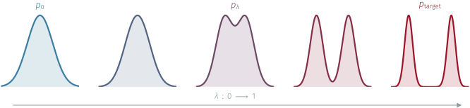
Learned sequential flows [6]
Parallel tempering
One route among others: interpolate an easy distribution to the target. [3]
\[S_\lambda = (1-\lambda)\,S_0 + \lambda\,S_{\mathrm{target}} \;\Longrightarrow \; p_\lambda \sim e^{-S_\lambda} \]
Learned sequential flows [6]
Parallel tempering
A QCD-like toy model
asymptotic freedom, a mass gap, \(\theta\)-vacua, and the same topological freezing
at a fraction of the cost.
Fundamental field: a unit complex \(N\)-vector
\[z(x)\in\mathbb{C}^N,\qquad z^{\dagger}(x)\,z(x)=1\]
with a local \(U(1)\) gauge redundancy
\[z(x)\;\longrightarrow\;e^{i\alpha(x)}\,z(x)\]
Lattice action:
\[S=-2N\beta\sum_{x,\mu}\mathrm{Re}\!\big[z^{\dagger}_x\,U_{x,\mu}\,z_{x+\hat\mu}\big]\]
Nontrivial topology:
\[\pi_2\!\big(CP^{N-1}\big)=\mathbb{Z}\]
Each configuration carries an integer topological charge
\[Q=\frac{1}{2\pi}\!\int\! d^2x\;\epsilon_{\mu\nu}\,\partial_\mu A_\nu\;\in\;\mathbb{Z}\]
Open BC [7]
No Topological barriers and \(Q\) change freely
Periodic BC
Target Physical Theory but topology is frozen!
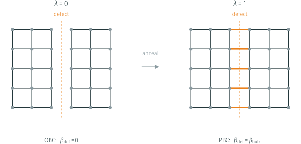
The defect is a line of links (a cut) with tunable coupling. [8]
Anneal \(\;\beta_{\mathrm{def}}(\lambda)=\lambda\,\beta_{\mathrm{bulk}}\): at \(\lambda=0\) the cut is open; at \(\lambda=1\) we recover the periodic theory.
\(N_R\) replicas with fixed couplings \(\lambda_0=0\; ,\dots, \;\lambda_{N_R-1}=1\) run in parallel
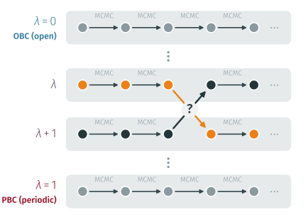
local MC in each replica samples its own \(p_\lambda\);
Propose a configuration swap between adjacent replicas
Accept/Reject \(\Longrightarrow\) detailed balance :
\(A=\min\!\big(1,\;\frac{p_{\lambda}(x_{\lambda+1})\, p_{\lambda+1}(x_{\lambda})}{p_{\lambda}(x_{\lambda})\, p_{\lambda+1}(x_{\lambda+1})}\big)\)
Efficient PT ladder \(\Longrightarrow\) topological mixing from the open replica to the target periodic one. [9]
Given a fixed budget of steps / replicas, where should they go?
The answer comes from Information Geometry by studying the Fisher metric
The space of probability distributions is a smooth manifold, carrying a natural metric \(\Rightarrow\) the Fisher metric:
\[g(\lambda) \;=\; \mathbb{E}_{p_\lambda}\!\Big[\big(\partial_\lambda \log p_\lambda\big)^2\Big]\]
For Boltzmann like \(p_\lambda \propto e^{-S_\lambda}\)
\[\partial_\lambda \log p_\lambda \;=\; -\,\partial_\lambda S_\lambda \;+\; \langle \partial_\lambda S_\lambda\rangle_{p_\lambda}\]
so the metric is just a variance:
\(g(\lambda) \;=\; \mathrm{Var}_{p_\lambda}\!\big[\partial_\lambda S_\lambda\big]\)
… and a distance
Second-order expansion of the KL divergence:
\[D_{\mathrm{KL}}\big(p_\lambda \,\|\, p_{\lambda+d\lambda}\big) \;\simeq\; \tfrac{1}{2}\, g(\lambda)\, d\lambda^2\]
\(g(\lambda)\) \(\Rightarrow\) local distinguishability of nearby distributions
large \(g\) \(\Rightarrow p_\lambda\) moves fast, hard to bridge small \(g\) \(\Rightarrow p_\lambda\) barely moves, easy
Thermodynamic length [10]
Fisher metric turns the path into a distance:
\[\Lambda \;=\; \int_0^1 \!\sqrt{g(\lambda)}\,d\lambda \left(=\; \sum_k \Delta\ell_k \right) \]
Running it in a finite (fictitious) time \(\tau\) dissipates work [11]
\[W_{\mathrm{diss}} \;\propto\; \frac{1}{\Delta t}\sum_k \Delta\ell_k^{\,2}\]
Minimize \(W_{\mathrm{diss}}\) at fixed length \(\Lambda\) leads to
\[\Delta\ell_1 \;=\; \Delta\ell_2 \;=\; \cdots \;=\; \Delta\ell_N .\]
\(\Delta\ell_k = \dfrac{\Lambda}{N} = \text{const} \;\;\Longleftrightarrow\;\; \dfrac{d\lambda}{dt}\propto\dfrac{1}{\sqrt{g(\lambda)}}\)
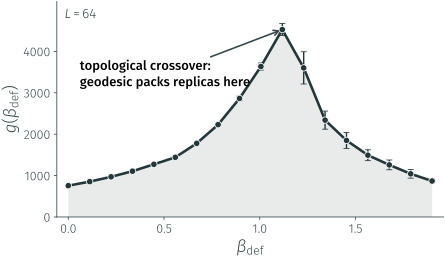
The geodesic condition:
Equidistribute the thermodynamic length
Spend more steps where \(g\) is large, fewer where it is small.
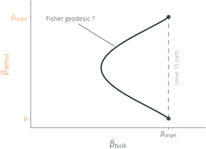
\[g_{ij} \;=\; \mathrm{Cov}_{p}\!\big[\partial_{\beta_i} S,\; \partial_{\beta_j} S\big]\]
Optimal protocol \(\Rightarrow\) geodesic in the \((\beta_{\mathrm{bulk}},\,\beta_{\mathrm{defect}})\) plane.
Why hold every site to the same coupling?
Let it vary in space too:
\(\beta \;\longrightarrow\; \beta(x,y,t)\)
1 · Parametrize the field
\(d(x,y)\) → U-Net → \(F(x,y,\lambda)\)
\[\beta(x,y,\lambda) = \beta_{\mathrm{base}} + C_{\max}\,F(x,y,\lambda)\,\sin(\pi \lambda)\]
2 · The loss is the geometry
\[\begin{aligned} \mathrm{sKL}(p_r, p_{r+1}) &= \tfrac{1}{2}\big[\,D_{\mathrm{KL}}(p_r \,\|\, p_{r+1}) + D_{\mathrm{KL}}(p_{r+1} \,\|\, p_r)\,\big] \\[3pt] &= \tfrac{1}{2}\big[\langle \Delta S\rangle_{p_r} - \langle \Delta S\rangle_{p_{r+1}}\big] \end{aligned}\]
Small steps: \(\;\mathrm{sKL}_r \approx \tfrac{1}{2}\,g(\lambda_r)\,\Delta\lambda_r^{2} = \tfrac{1}{2}\,\Delta\ell_r^{2}\)
\[\sum_r \mathrm{sKL}_r \;\approx\; \tfrac{1}{2}\sum_r \Delta\ell_r^{2}\;\ge\;\frac{\Lambda^{2}}{2N}\]
Minimizing it \(\Rightarrow\) equal \(\Delta\ell\):
Geodesic of length \(\Lambda\), from PT samples (no \(Z\)).
The U‑Net learns the Fisher geodesic end‑to‑end from PT samples,does its trajectory match the theory?
\(L=32 \quad \beta=1.8 \quad N=6\)
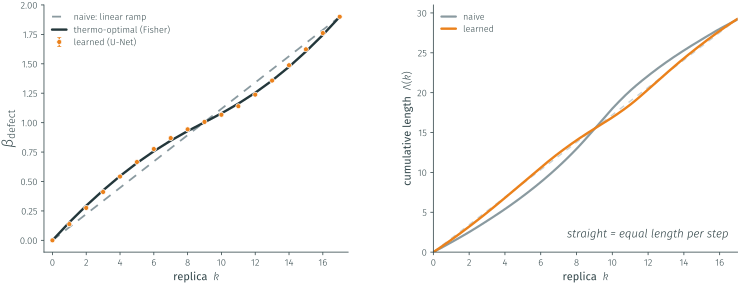
The learned schedule lands
on the measured Fisher optimum.
…and walks it at equal thermodynamic length per step
the geodesic condition recovered from samples alone.
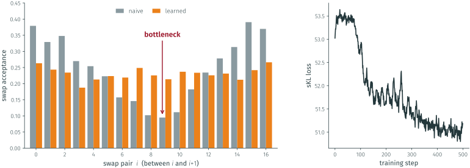
The naive ladder drops to 9.5% acceptance at the crossover.
The learned schedule keeps every rung uniform, so replicas round-trip.
It gets there by minimizing the sKL loss — equal-length steps, the geodesic condition.
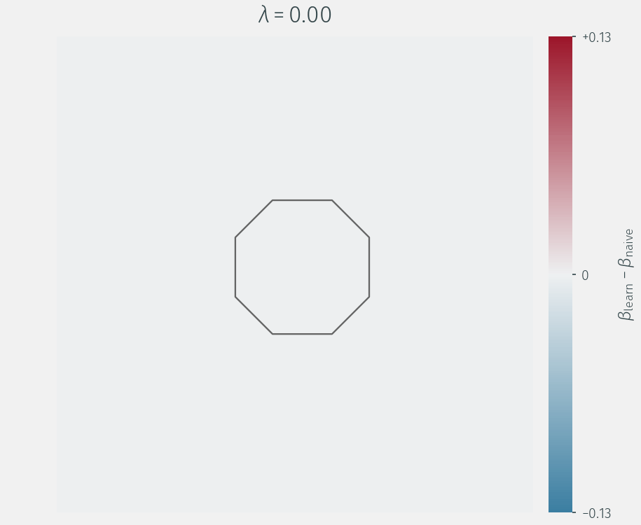
The U-Net emits a full field \(\beta(x,y,\lambda)\);
not a scalar schedule.
Freedom no scalar schedule has.
\(N=21 \quad L=150 \quad \beta \simeq 0.8 \quad N_R=12\)
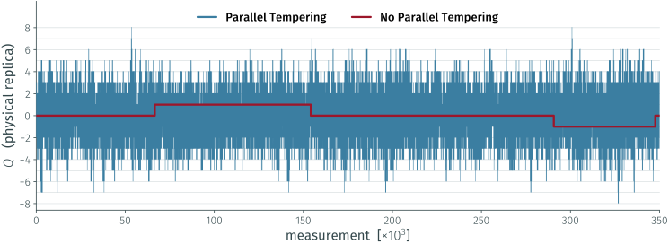
The full run ~350k measurements (\(L=150\), optimized schedule): the physical replica visits sectors \(-8\ldots+8\).
Tempering through the defect keeps the charge unfrozen, where local updates would freeze it.
\(\tau_{\mathrm{int}}(Q^2)\sim(\xi/a)^{z}\)
\(\Lambda/\xi \equiv L_d/\xi \qquad\) \(\qquad L_d \lesssim 12\%\,L \qquad\) \(\qquad \Lambda \propto \sqrt{L_d} \qquad\)
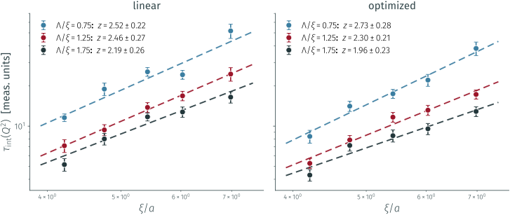
Five volumes with \(L/\xi \gtrsim 20\) and three defect sizes: optimized schedule (right) sits systematically below the linear one (left).
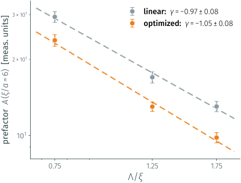
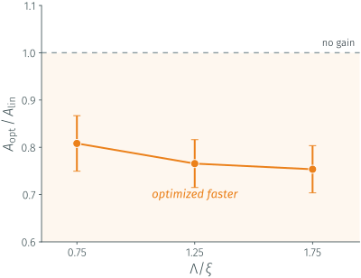
The prefactor falls as \(A\sim(\Lambda/\xi)^{\gamma}\) with \(\gamma\approx-1\)
a larger defect (more replicas) already helps.
On top of that, the optimized schedule has a further \(\sim20\%\) off, uniformly in \(\Lambda/\xi\).
Questions?
[1] Del Debbio, Manca, Vicari, Phys. Lett. B 594 (2004) 315 [arXiv:hep-lat/0403001]
[2] Schaefer, Sommer, Virotta (ALPHA), Nucl. Phys. B 845 (2011) 93 [arXiv:1009.5228]
[3] Neal, Stat. Comput. 11 (2001) 125 [arXiv:physics/9803008]
[4] Caselle, Cellini, Nada, Panero, JHEP 07 (2022) 015 [arXiv:2201.08862]
[5] Albergo, Vanden-Eijnden, ICML 2025 [arXiv:2410.02711]
[6] Albergo, Kanwar, Shanahan, Phys. Rev. D 100 (2019) 034515 [arXiv:1904.12072]
[7] Lüscher, Schaefer, JHEP 07 (2011) 036 [arXiv:1105.4749]
[8] Hasenbusch, Phys. Rev. D 96 (2017) 054504 [arXiv:1706.04443]
[9] Bonanno, Clemente, D’Elia, Maio, Parente, JHEP 08 (2024) 236 [arXiv:2404.14151]
[10] Crooks, Phys. Rev. Lett. 99 (2007) 100602 [arXiv:0706.0559]
[11] Sivak, Crooks, Phys. Rev. Lett. 108 (2012) 190602 [arXiv:1201.4166]
Optimal Annealing and Information Geometry for Topological Freezing